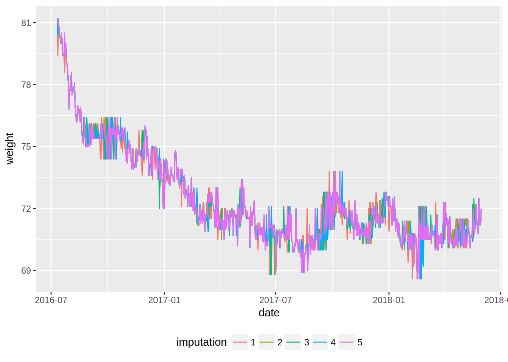
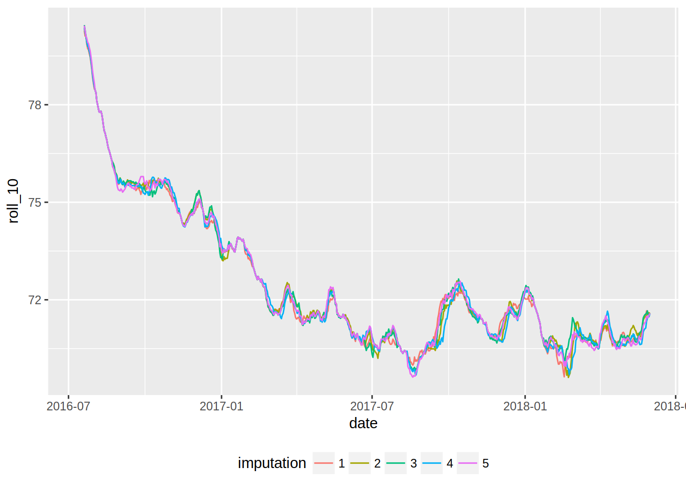
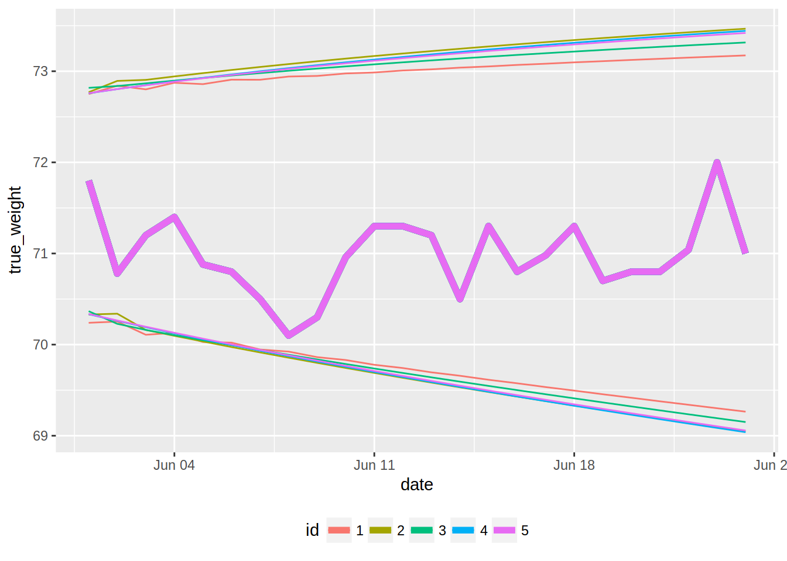

Forecasting my weight with R
June 24, 2018I’ve been measuring my weight almost daily for almost 2 years now; I actually started earlier, but
not as consistently. The goal of this blog post is to get re-acquaiented with time series; I haven’t
had the opportunity to work with time series for a long time now and I have seen that quite a few
packages that deal with time series have been released on CRAN. In this blog post, I will explore
my weight measurements using some functions from the {tsibble} and {tibbletime} packages,
and then do some predictions with the {forecast} package.
First, let’s load the needed packages, read in the data and convert it to a tsibble:
library("tidyverse")
library("readr")
library("forecast")
library("tsibble")
library("tibbletime")
library("mice")weight <- read_csv("https://gist.githubusercontent.com/b-rodrigues/ea60679135f8dbed448ccf66a216811f/raw/18b469f3b0720f76ce5ee2715d0f9574b615f170/gistfile1.txt") %>%
as_tsibble()## Parsed with column specification:
## cols(
## Date = col_date(format = ""),
## Poids = col_double()
## )## The `index` is `Date`.You can read more about {tsibble} here. Here, I use {tsibble} mostly
for the next step, which is using the function fill_na() on the tsibble. fill_na() turns
implicit missing values into explicit missing values. These are implicit missing values:
Date Poids
1 2013-01-01 84.10
2 2013-01-04 85.60and this is the same view, but with explicit missing values:
Date Poids
1 2013-01-01 84.10
2 2013-01-02 NA
3 2013-01-03 NA
4 2013-01-04 85.60This is useful to do, because I want to impute the missing values using the {mice} package.
Let’s do this:
weight <- weight %>%
fill_na()
imp_weight <- mice(data = weight) %>%
mice::complete("long")##
## iter imp variable
## 1 1 Poids
## 1 2 Poids
## 1 3 Poids
## 1 4 Poids
## 1 5 Poids
## 2 1 Poids
## 2 2 Poids
## 2 3 Poids
## 2 4 Poids
## 2 5 Poids
## 3 1 Poids
## 3 2 Poids
## 3 3 Poids
## 3 4 Poids
## 3 5 Poids
## 4 1 Poids
## 4 2 Poids
## 4 3 Poids
## 4 4 Poids
## 4 5 Poids
## 5 1 Poids
## 5 2 Poids
## 5 3 Poids
## 5 4 Poids
## 5 5 PoidsLet’s take a look at imp_weight:
head(imp_weight)## .imp .id Date Poids
## 1 1 1 2013-10-28 84.1
## 2 1 2 2013-10-29 84.4
## 3 1 3 2013-10-30 83.5
## 4 1 4 2013-10-31 84.1
## 5 1 5 2013-11-01 85.6
## 6 1 6 2013-11-02 85.2Let’s select the relevant data. I filter from the 11th of July 2016, which is where I started weighing myself almost every day, to the 31st of May 2018. I want to predict my weight for the month of June (you might think of the month of June 2018 as the test data, and the rest as training data):
imp_weight_train <- imp_weight %>%
filter(Date >= "2016-07-11", Date <= "2018-05-31")In the next lines, I create a column called imputation which is simply the same as the column
.imp but of character class, remove unneeded columns and rename some other columns (“Poids” is
French for weight):
imp_weight_train <- imp_weight_train %>%
mutate(imputation = as.character(.imp)) %>%
select(-.id, -.imp) %>%
rename(date = Date) %>%
rename(weight = Poids)Let’s take a look at the data:
ggplot(imp_weight_train, aes(date, weight, colour = imputation)) +
geom_line() +
theme(legend.position = "bottom")
This plots gives some info, but it might be better to smooth the lines. This is possible by
computing a rolling mean. For this I will use the rollify() function of the {tibbletime} package:
mean_roll_5 <- rollify(mean, window = 5)
mean_roll_10 <- rollify(mean, window = 10)rollify() can be seen as an adverb, pretty much like purrr::safely(); rollify() is a higher
order function that literally rollifies a function, in this case mean() which means that
rollifying the mean creates a function that returns the rolling mean. The window argument lets
you decide how smooth you want the curve to be: the higher the smoother. However, you will lose
some observations. Let’s use this functions to add the rolling means to the data frame:
imp_weight_train <- imp_weight_train %>%
group_by(imputation) %>%
mutate(roll_5 = mean_roll_5(weight),
roll_10 = mean_roll_10(weight))Now, let’s plot these new curves:
ggplot(imp_weight_train, aes(date, roll_5, colour = imputation)) +
geom_line() +
theme(legend.position = "bottom")## Warning: Removed 20 rows containing missing values (geom_path).
ggplot(imp_weight_train, aes(date, roll_10, colour = imputation)) +
geom_line() +
theme(legend.position = "bottom")## Warning: Removed 45 rows containing missing values (geom_path).
That’s easier to read, isn’t it?
Now, I will use the auto.arima() function to train a model on the data to forecast my weight for
the month of June. However, my data, imp_weight_train is a list of datasets. auto.arima() does
not take a data frame as an argument, much less so a list of datasets. I’ll create a wrapper around
auto.arima() that works on a dataset, and then map it to the list of datasets:
auto.arima.df <- function(data, y, ...){
y <- enquo(y)
yts <- data %>%
pull(!!y) %>%
as.ts()
auto.arima(yts, ...)
}auto.arima.df() takes a data frame as argument, and then y, which is the column that contains the
univariate time series. This column then gets pulled out of the data frame, converted to a time
series object with as.ts(), and then passed down to auto.arima(). I can now use this function
on my list of data sets. The first step is to nest the data:
nested_data <- imp_weight_train %>%
group_by(imputation) %>%
nest() Let’s take a look at nested_data:
nested_data## # A tibble: 5 x 2
## imputation data
## <chr> <list>
## 1 1 <tibble [690 × 4]>
## 2 2 <tibble [690 × 4]>
## 3 3 <tibble [690 × 4]>
## 4 4 <tibble [690 × 4]>
## 5 5 <tibble [690 × 4]>nested_data is a tibble with a column called data, which is a so-called list-column. Each
element of data is itself a tibble. This is a useful structure, because now I can map auto.arima.df()
to the data frame:
models <- nested_data %>%
mutate(model = map(data, auto.arima.df, y = weight))This trick can be a bit difficult to follow the first time you see it. The idea is the following:
nested_data is a tibble. Thus, I can add a column to it using mutate(). So far so good.
Now that I am “inside” the mutate call, I can use purrr::map(). Why? purrr::map() takes a list
and then a function as arguments. Remember that data is a list column; you can see it above,
the type of the column data is list. So data is a list, and thus can be used inside purrr::map().
Great. Now, what is inside data? tibbles, where inside each of them is a column
called weight. This is the column that contains my univariate time series I want to model. Let’s
take a look at models:
models## # A tibble: 5 x 3
## imputation data model
## <chr> <list> <list>
## 1 1 <tibble [690 × 4]> <S3: ARIMA>
## 2 2 <tibble [690 × 4]> <S3: ARIMA>
## 3 3 <tibble [690 × 4]> <S3: ARIMA>
## 4 4 <tibble [690 × 4]> <S3: ARIMA>
## 5 5 <tibble [690 × 4]> <S3: ARIMA>models is a tibble with a column called model, where each element is a model of type ARIMA.
Adding forecasts is based on the same trick as above, and we use the forecast() function:
forecasts <- models %>%
mutate(predictions = map(model, forecast, h = 24)) %>%
mutate(predictions = map(predictions, as_tibble)) %>%
pull(predictions) I forecast 24 days (I am writing this on the 24th of June), and convert the predictions to tibbles, and then pull only the predictions tibble:
forecasts## [[1]]
## # A tibble: 24 x 5
## `Point Forecast` `Lo 80` `Hi 80` `Lo 95` `Hi 95`
## * <dbl> <dbl> <dbl> <dbl> <dbl>
## 1 71.5 70.7 72.3 70.2 72.8
## 2 71.5 70.7 72.4 70.3 72.8
## 3 71.5 70.6 72.3 70.1 72.8
## 4 71.5 70.6 72.4 70.1 72.9
## 5 71.4 70.5 72.4 70.0 72.9
## 6 71.5 70.5 72.4 70.0 72.9
## 7 71.4 70.5 72.4 69.9 72.9
## 8 71.4 70.4 72.4 69.9 72.9
## 9 71.4 70.4 72.4 69.9 72.9
## 10 71.4 70.4 72.4 69.8 73.0
## # ... with 14 more rows
##
## [[2]]
## # A tibble: 24 x 5
## `Point Forecast` `Lo 80` `Hi 80` `Lo 95` `Hi 95`
## * <dbl> <dbl> <dbl> <dbl> <dbl>
## 1 71.6 70.8 72.3 70.3 72.8
## 2 71.6 70.8 72.5 70.3 72.9
## 3 71.5 70.6 72.4 70.2 72.9
## 4 71.5 70.6 72.5 70.1 72.9
## 5 71.5 70.5 72.5 70.0 73.0
## 6 71.5 70.5 72.5 70.0 73.0
## 7 71.5 70.5 72.5 69.9 73.0
## 8 71.5 70.4 72.5 69.9 73.1
## 9 71.5 70.4 72.5 69.8 73.1
## 10 71.4 70.3 72.6 69.7 73.1
## # ... with 14 more rows
##
## [[3]]
## # A tibble: 24 x 5
## `Point Forecast` `Lo 80` `Hi 80` `Lo 95` `Hi 95`
## * <dbl> <dbl> <dbl> <dbl> <dbl>
## 1 71.6 70.8 72.4 70.4 72.8
## 2 71.5 70.7 72.4 70.2 72.8
## 3 71.5 70.6 72.4 70.2 72.9
## 4 71.5 70.6 72.4 70.1 72.9
## 5 71.5 70.5 72.4 70.0 72.9
## 6 71.5 70.5 72.4 70.0 73.0
## 7 71.5 70.5 72.5 69.9 73.0
## 8 71.4 70.4 72.5 69.9 73.0
## 9 71.4 70.4 72.5 69.8 73.0
## 10 71.4 70.4 72.5 69.8 73.1
## # ... with 14 more rows
##
## [[4]]
## # A tibble: 24 x 5
## `Point Forecast` `Lo 80` `Hi 80` `Lo 95` `Hi 95`
## * <dbl> <dbl> <dbl> <dbl> <dbl>
## 1 71.5 70.8 72.3 70.3 72.8
## 2 71.5 70.7 72.4 70.3 72.8
## 3 71.5 70.7 72.4 70.2 72.8
## 4 71.5 70.6 72.4 70.1 72.9
## 5 71.5 70.6 72.4 70.1 72.9
## 6 71.5 70.5 72.5 70.0 73.0
## 7 71.5 70.5 72.5 69.9 73.0
## 8 71.5 70.4 72.5 69.9 73.0
## 9 71.4 70.4 72.5 69.8 73.1
## 10 71.4 70.3 72.5 69.8 73.1
## # ... with 14 more rows
##
## [[5]]
## # A tibble: 24 x 5
## `Point Forecast` `Lo 80` `Hi 80` `Lo 95` `Hi 95`
## * <dbl> <dbl> <dbl> <dbl> <dbl>
## 1 71.5 70.8 72.3 70.3 72.8
## 2 71.5 70.7 72.4 70.3 72.8
## 3 71.5 70.7 72.4 70.2 72.8
## 4 71.5 70.6 72.4 70.1 72.9
## 5 71.5 70.6 72.4 70.1 72.9
## 6 71.5 70.5 72.4 70.0 73.0
## 7 71.5 70.5 72.5 69.9 73.0
## 8 71.5 70.4 72.5 69.9 73.0
## 9 71.4 70.4 72.5 69.8 73.1
## 10 71.4 70.3 72.5 69.8 73.1
## # ... with 14 more rowsSo forecasts is a list of tibble, each containing a forecast. Remember that I have 5 tibbles, because
I imputed the data 5 times. I will merge this list of data sets together into one, but before I need
to add a column that indices the forecasts:
forecasts <- map2(.x = forecasts, .y = as.character(seq(1, 5)),
~mutate(.x, id = .y)) %>%
bind_rows() %>%
select(-c(`Lo 80`, `Hi 80`))
colnames(forecasts) <- c("point_forecast", "low_95", "hi_95", "id")Let’s take a look again at forecasts:
forecasts## # A tibble: 120 x 4
## point_forecast low_95 hi_95 id
## <dbl> <dbl> <dbl> <chr>
## 1 71.5 70.2 72.8 1
## 2 71.5 70.3 72.8 1
## 3 71.5 70.1 72.8 1
## 4 71.5 70.1 72.9 1
## 5 71.4 70.0 72.9 1
## 6 71.5 70.0 72.9 1
## 7 71.4 69.9 72.9 1
## 8 71.4 69.9 72.9 1
## 9 71.4 69.9 72.9 1
## 10 71.4 69.8 73.0 1
## # ... with 110 more rowsI now select the true values for the month of June. I also imputed this data, but here I will simply keep the average of the imputations:
weight_june <- imp_weight %>%
filter(Date >= "2018-06-01") %>%
select(-.id) %>%
group_by(Date) %>%
summarise(true_weight = mean(Poids)) %>%
rename(date = Date)Let’s take a look at weight_june:
weight_june## # A tibble: 24 x 2
## date true_weight
## <date> <dbl>
## 1 2018-06-01 71.8
## 2 2018-06-02 70.8
## 3 2018-06-03 71.2
## 4 2018-06-04 71.4
## 5 2018-06-05 70.9
## 6 2018-06-06 70.8
## 7 2018-06-07 70.5
## 8 2018-06-08 70.1
## 9 2018-06-09 70.3
## 10 2018-06-10 71.0
## # ... with 14 more rowsLet’s repeat weight_june 5 times, and add the index 1 to 5. Why? Because I want to merge the
true data with the forecasts, and having the data in this form makes things easier:
weight_june <- modify(list_along(1:5), ~`<-`(., weight_june)) %>%
map2(.y = as.character(seq(1, 5)),
~mutate(.x, id = .y)) %>%
bind_rows()The first line:
modify(list_along(1:5), ~`<-`(., weight_june)) looks quite complicated, but you will see that it is not, once we break it apart. modify()
modifies a list. The list to modify is list_along(1:5), which create a list of NULLs:
list_along(1:5)## [[1]]
## NULL
##
## [[2]]
## NULL
##
## [[3]]
## NULL
##
## [[4]]
## NULL
##
## [[5]]
## NULLThe second argument of modify() is either a function or a formula. I created the following
formula:
~`<-`(., weight_june)We all know the function <-(), but are not used to see it that way. But consider the following:
a <- 3`<-`(a, 3)These two formulations are equivalent. So these lines fill the empty element of the list of NULLs
with the data frame weight_june. Then I add the id column and then bind the rows together: bind_rows().
Let’s bind the columns of weight_june and forecasts and take a look at it:
forecasts <- bind_cols(weight_june, forecasts) %>%
select(-id1)
forecasts## # A tibble: 120 x 6
## date true_weight id point_forecast low_95 hi_95
## <date> <dbl> <chr> <dbl> <dbl> <dbl>
## 1 2018-06-01 71.8 1 71.5 70.2 72.8
## 2 2018-06-02 70.8 1 71.5 70.3 72.8
## 3 2018-06-03 71.2 1 71.5 70.1 72.8
## 4 2018-06-04 71.4 1 71.5 70.1 72.9
## 5 2018-06-05 70.9 1 71.4 70.0 72.9
## 6 2018-06-06 70.8 1 71.5 70.0 72.9
## 7 2018-06-07 70.5 1 71.4 69.9 72.9
## 8 2018-06-08 70.1 1 71.4 69.9 72.9
## 9 2018-06-09 70.3 1 71.4 69.9 72.9
## 10 2018-06-10 71.0 1 71.4 69.8 73.0
## # ... with 110 more rowsNow, for the last plot:
ggplot(forecasts, aes(x = date, colour = id)) +
geom_line(aes(y = true_weight), size = 2) +
geom_line(aes(y = hi_95)) +
geom_line(aes(y = low_95)) +
theme(legend.position = "bottom")
The true data fall within all the confidence intervals, but I am a bit surprised by the intervals, especially the upper confidence intervals; they all are way above 72kg, however my true weight has been fluctuating around 71kg for quite some months now. I think I have to refresh my memory on time series, because I am certainly missing something!
If you found this blog post useful, you might want to follow me on twitter for blog post updates.